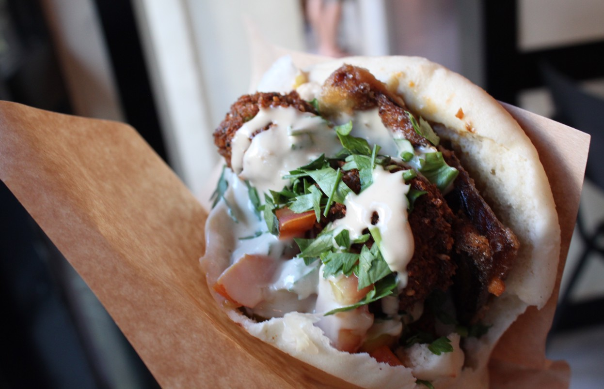

Home
Lets make some Falafel 😋.

Description
Falafel is Israel’s national dish, and if you’re a fan of
these famous chickpea fritters then you’ll not go hungry. Falafel are
eaten across the Middle East and most Arab countries, and the dish’s
origins border on the mythical – many different countries claim to have
invented them, although most records indicate they originally came from
Egypt. Wherever falafel comes from, it has been fully adopted into Israeli
cuisine, and is a daily staple for many. When it comes to street food
falafel, they’re usually stuffed into pitta bread with plenty of hummus,
tahini sauce, pickles and salad, with fresh tomatoes and fried aubergine
adding even more flavour. If there’s one thing you need to eat while in
Israel, it’s this.
Ingredients
-
Driedn chickpea: AVOID using canned chickpeas! Dried
chickpeas (that have been soaked in water for 24 hours) are an important
ingredient that will give your falafel the right consistency and taste.
(Tip: I usually add about ½ teaspoon of baking soda to the soaking water
to help soften the dry chickpeas.)
-
Fresh herbs fresh parsley, cilantro, and dill are key
to this authentic recipe.
-
Onion I typically use yellow onions, but white or red
onions would work.
- Garlic for best flavor, use fresh garlic cloves.
- Kosher salt and pepper: to taste.
-
Spices cumin, coriander, and a little cayenne pepper.
Along with the fresh herbs, this trio of spices is what gives falafel
it's bold authentic taste.
-
Baking powder this is what gives falafel an airy,
fluffy texture (many recipes skip this, causing the falafel to come out
too dense.)
-
Sesame seeds these are optional here, but I do like the
added nuttiness.
How to Make Falafel: Step-by-Step
-
Soak chickpeas for 24 hours: Cover them in plenty of
water and add baking soda to help soften them as they soak. The
chickpeas will at least double in size as they soak. Drain very well.
-
Make mixture: Add chickpeas, fresh herbs (parsley,
cilantro, and dill), garlic, onion, and spices to food processor and
pulse a little bit at a time until the mixture is finely ground. You’ll
know it’s ready when the texture is more like coarse meal.
-
Form patties or balls: Once the falafel mixture has
been plenty chilled, stir in baking powder and toasted sesame seeds,
then scoop golf ball-sized balls and form into balls or patties (if you
go the patties route, do not flatten them too much, you want them to
still be nice and fluffy when they're cooked.)
-
Fry: Frying is the traditional way to cook falafel and
yields the most authentic and best result. Heat the oil on medium-high
until it bubbles softly (your oil should be hot enough around 375
degrees F, but not too hot that it causes the falafel to fall apart.)
Carefully drop the falafel in the oil, using a slotted spoon, and fry
for 3-5 minutes until medium brown on the outside. Avoid over-crowding
the falafel; fry them in batches if necessary.
Tip: it's always a good idea to fry one falafel first
to make sure the oil temperature does not need to be adjusted.